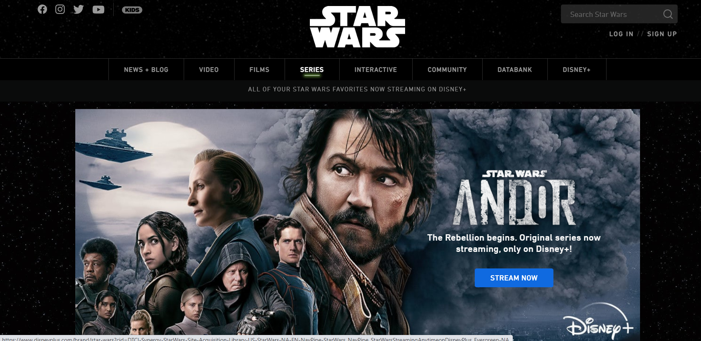
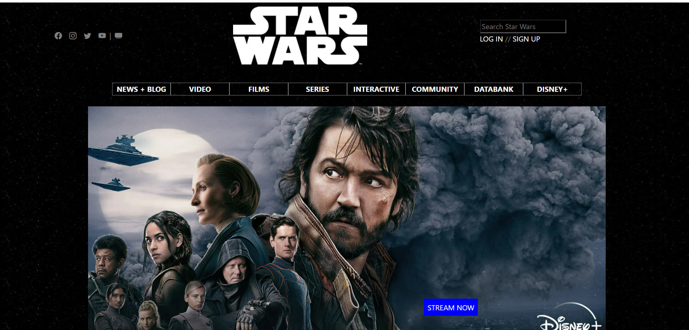

Have you ever browsed through the web and seen a well created web page and wondered how it was created? The answer to that question is using UI Frameworks. Having spent the past week developing web pages using only HTML and CSS it was difficult to create a nice website and even then it was not as nice as the various websites you see all over the internet. It is definitely possible to create a very nice page with HTML and CSS but it will require much more work writing the various classes and components necessary, whereas being able to use a UI Framework allows you to use some of the built-in classes and makes web development easier. There are some websites shown here using pure HTML and CSS to design their websites. After spending a week using pure HTML and CSS it was difficult to complete some of the practice WODs. However, after trying to replicate some websites using Bootstrap 5 I found it much easier to make a nice web design than just pure HTML and CSS.

Although trying to learn something such as Bootstrap 5 can be very difficult, being able to learn and apply Bootstrap 5 will make web development easier and the final product nicer to view. As shown in the image, that was an attempt at recreating the StarWars webpage for the show Andor (the real is pictured above). My webpage was developed using Bootstrap 5, HTML, and CSS and although it is not an exact replica it is still a close representation of a complicated web page that took a couple hours to build completely. There were many frustrations throughout the creation process but with some research and just testing out various things I was able to create my own representation. Getting past these initial frustrations by researching and just trying various tools available in Bootstrap 5 will make it worth it and in general save time compared to using just HTML and CSS as various classes are already implemented by Bootstrap 5.
Bootstrap 5 includes things such as a navbar and footer that made creating those two sections much easier than using pure HTML and CSS. When creating a web page with a navbar using only HTML and CSS I had to create multiple classes just to create a semi-functioning navbar. Although it is possible to create a navbar in HTML and CSS, when I created mine it was very messy and it was not as nice as using Bootstrap 5 and their navbar class. Bootstrap 5 also includes various benefits to software engineering including easier development and maintenance, and easier collaboration. Having a UI Framework makes overall development much easier to go through and it is easier to maintain as it will have a well-defined structure and is available for anyone to use. UI Frameworks also improve collaboration as it uses a set of tools that everyone can access and understand instead of having to go through the classes that are written by another developer.